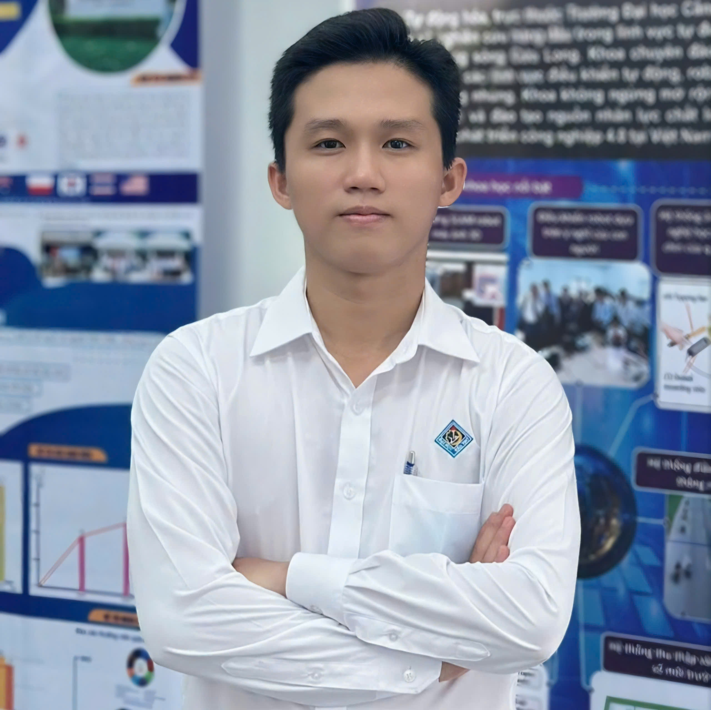

Học vấn
Kỹ sư phần mềm
Đại học Cần Thơ
2020 – 2024
Software Developer & Business Analyst
Lập trình phát triển phần mềm, phân tích nghiệp vụ và tư vấn giải pháp chuyển đổi số. Yêu thích nghiên cứu, học tập và ứng dụng công nghệ vào thực tiễn.

LĨNH VỰC QUAN TÂM
Xin chào, mình là Lê Vũ Luân — một lập trình viên và Chuyên viên phân tích nghiệp vụ (Business Analyst) với 1 năm kinh nghiệm trong phát triển website và phân tích dự án. Mình yêu thích việc biến các vấn đề phức tạp thành những giải pháp đơn giản, thân thiện với người dùng, kết nối kỹ năng kỹ thuật với nhu cầu thực tế của khách hàng.
Thông tin học vấn sau đại học chưa có trong dữ liệu gốc; cần cập nhật khi được xác nhận.
Kỹ sư phần mềm
Đại học Cần Thơ
2020 – 2024
Phát triển phần mềm
Phân tích nghiệp vụ
Chuyển đổi số
AI và dữ liệu
Ứng dụng công nghệ
vì cộng đồng
Fulltime
Quản lý trang trại thông minh
Các công việc part-time dành cho sinh viên
Nền tảng quản lý nuôi lươn thông minh tích hợp AI. Thông tin chi tiết cần được xác nhận trước khi công bố.
Dự án minh họa đang chờ bổ sung mô tả, vai trò và đường dẫn công khai.
Thông tin dự án, vai trò tham gia và tài liệu công bố cần được cập nhật.